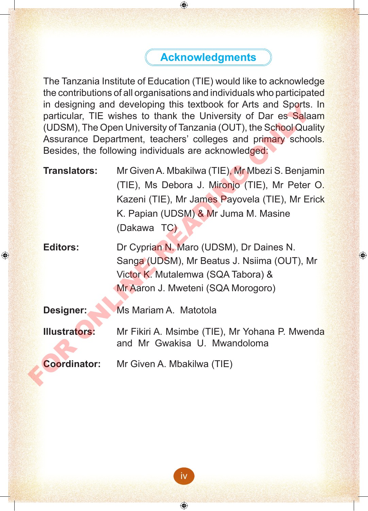

Acknowledgements
The Tanzania Institute of Education (TIE) would like to acknowledge the contributions of all organisations and individuals who participated in designing and developing this textbook for Arts and Sports. In particular, TIE wishes to thank the University of Dar es Salaam (UDSM), The Open University of Tanzania (OUT), the School Quality Assurance Department, teachers’ colleges and primary schools. Besides, the following individuals are acknowledged:
- Translators:
- Mr Given A. Mbakilwa (TIE), Mr Mbezi S. Benjamin (TIE), Ms Debora J. Mironjo (TIE), Mr Peter O. Kazeni (TIE), Mr James Payovela (TIE), Mr Erick K. Papian (UDSM) & Mr Juma M. Masine (Dakawa TC)
- Editors:
- Dr Cyprian N. Maro (UDSM), Dr Daines N. Sanga (UDSM), Mr Beatus J. Nshima (OUT), Mr Victor K. Mutalemwa (SQA Tabora) & Mr Aaron J. Mweteni (SQA Morogoro)
- Designer:
- Ms Mariam A. Matotola
- Illustrators:
- Mr Fikiri A. Msimbe (TIE), Mr Yohania P. Mwenda and Mr Gwakisa U. Mwandoloma
- Coordinator:
- Mr Given A. Mbakilwa (TIE)